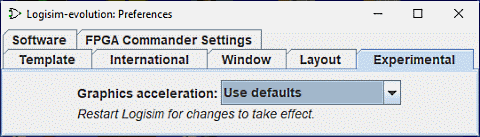

实验性选项卡

这些首选项用于启用仍被视为实验性的功能，以便收集用户反馈。
- 图形加速： 一位 Logisim 用户观察到，在命令行中添加 -Dsun.java2d.d3d=True 似乎可以让 Logisim 使用硬件图形加速，从而改善图形性能。此下拉框会尝试为 Logisim 配置该设置；欢迎反馈它是否会影响性能。此设置需要重新启动 Logisim 后才会生效。
-
仿真事件队列： 仿真事件队列是仿真器要处理的事件优先级队列。队列实现的选择会影响仿真的效率和速度。对一个项目最高效的实现，未必适合另一个项目。目前提供 5 种选择，欢迎反馈哪种实现更适合您的项目。您可以在 https://github.com/logisim-evolution/logisim-evolution/discussions 的仿真队列讨论中发表评论。更改需要关闭并重新打开项目后才会生效。选项如下：
- Java 优先级队列： 这是当前的默认选项。一个可靠的选择，能合理处理极端情况，但速度不是特别快。
- 伸展树优先级队列： 这可能更快，但在某些项目中树结构可能不平衡；由于实现使用递归，甚至可能因堆栈溢出而失败。
- 链式优先级队列： 一种从队尾向前查找插入位置的链式队列。它在某些项目中很快，但最坏情况性能较差。
- 队列排序链表： 速度可以相当快。此实现使用按时间排序的节点列表，每个时间节点都有一个标准链式队列，用于保存目标时间相同的所有事件。
- 队列排序树： 速度也可以相当快。它使用排序树管理时间节点。在包含大量不同延迟的项目中，它通常比队列排序链表表现更好；但在较简单的项目中开销更大。即使项目很大，也仍可能比队列排序链表更慢。
下一节： 命令行选项。